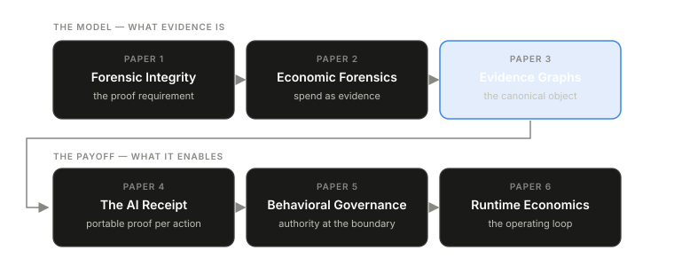

Production AI systems fail a basic test. Ask what the system did, why it cost what it cost, and whether it acted within its authority, and most teams can produce a log line, a token chart, or a plausible story. None of that is evidence.
Volume I argues that production AI systems need a runtime evidence layer. The claim is architectural. An AI system assembles its behavior at execution time — model choice, retrieval, tool calls, retries, fallbacks, cache decisions, human approvals — and that behavior is only fully visible while it is happening. If the runtime does not capture evidence at that moment, the evidence does not exist afterward. Every downstream artifact depends on what the runtime chose to preserve: the cost report, the incident investigation, the governance decision, the audit.
Six papers build the layer in sequence. Each brief below summarizes one paper’s argument; the full papers are available to teams we work with (see what we publish and what we don’t).

Paper 1 — Forensic Integrity for AI Runtime Systems. What a runtime must capture, and in what shape, for later claims to be provable rather than asserted.
Paper 2 — Economic Forensics. AI cost is runtime behavior expressed as money. Every dollar claim should cite the evidence that produced it.
Paper 3 — Evidence Graphs. The canonical object underneath the rest: a typed, append-only graph of runtime evidence. Reports, receipts, and governance views are projections over it.
Paper 4 — The AI Receipt. A bounded accountability record for one meaningful AI action, built from that graph.
Paper 5 — Behavioral Governance. The boundary where a proposed action becomes a governed decision, evidenced the same way.
Paper 6 — Runtime Economics. The operating loop: the same evidence, captured continuously, as the basis for ongoing cost control rather than a one-time audit.
The sequence matters more than any single paper. A system cannot govern actions it cannot prove happened. It cannot optimize cost it cannot explain. Read 1–3 for the underlying model, 4–6 for the operational payoff. Either path eventually needs the other.
Two reference implementations appear throughout: the Blackridge Runtime Gateway (BRG) for runtime spend forensics and the Blackridge Control Plane (BCP) for authority governance. They are separate systems with separate jobs, and the argument stands independent of both. We reference them because a systems argument is easier to trust when it points at working code.
Authors
Daniel — founder and systems architect. Two decades in distributed systems, platform engineering, and infrastructure: Kubernetes, Go, networking, CI/CD, operational resilience. His approach follows Unix philosophy — modular, composable, observable, simple over abstract. He designed the architecture behind Blackridge (BRG and BCP), wrote the Northwatch Papers, and is the inventor on the pending patent covering their core mechanisms.
Geoffrey — co-founder and senior engineer. Twenty years across backend systems, cloud infrastructure, and security research, including privacy tooling and chip-design analysis at IBM. Three issued U.S. patents: automated software generation from component graphs, network privacy infrastructure, and semiconductor design analysis.